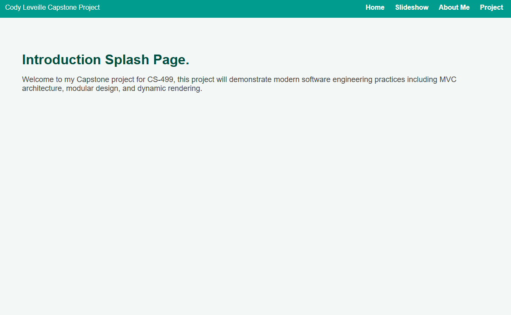
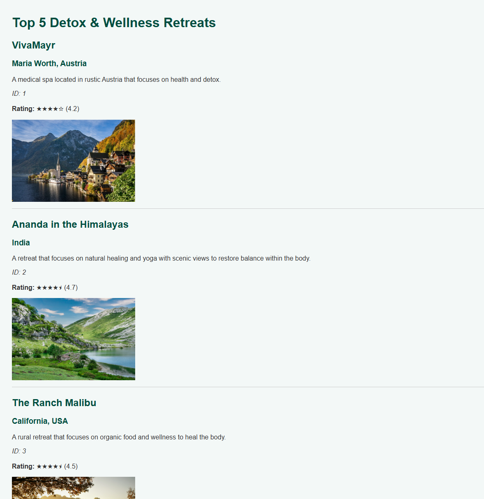

CS-499 Capstone ePortfolio – Cody Leveille
Enhancement 1 focused on rebuilding the project from the ground up it took a simple java slideshow and turned it into a functional Express web application that utilized handlers, routes and controllers and rendered things dynamically through hbs pages
Briefly describe the artifact. What is it? When was it created?
The artifact selected was a top 5 vacations destination slideshow back from CS-250. It was selected because it was a simple java application that had room to show growth and development from my programming journey. The program uses Jframe to display the initial information. The original design was practical but limited since everything was hard coded into the one program.
Justify the inclusion of the artifact in your ePortfolio. Why did you select this item? What specific components of the artifact showcase your skills and abilities in software development? How was the artifact improved?
The artifact was selected because it shows the results of basic programming knowledge from when I first started the programming journey at SNHU. Overall it was functional and simple but had a lot of opportunities to grow. The enhancement done for this section of the program shows I am capable of creating a project from the ground up with modern engineering practices. Originally this program was very monolithic so the capability of expanding it was limiting. With my enhancement I turned it into an express web application that is modular and utilizes MVC (Model View Controller) patterns, I created several functional pages in this enhancement including a splash page, a slideshow page that displays the information, an about me section and a project section. I implemented a dynamic header with a global stylesheet making everything look uniform throughout the page. The reason I selected the color I did is because it is my sister's favorite color and she is very dear to me. I had the opportunity to apply a personal touch, so I did. With this the teal and white combination it is aesthetically pleasing to the eyes
Below is a picture of the splash page hosted on localhost:3000
This demonstrates that the first enhancement has implemented a functional web application frame.
Did you meet the course outcomes you planned to meet with this enhancement in Module One? Do you have any updates to your outcome-coverage plans?
This enhancement meets my intended outcomes for this section. For this section it was aiming to achieve outcome 3 and 4. These outcomes were achieved through rebuilding a functional express based web application and it demonstrates the ability to design and implement modern software architecture from the empty files.
Outcome 3 was achieved through the use of a MVBC design pattern. The creation of controllers, routes, services and views reflects industry standards taught to us in CS-465. The new project structure is more expandable and overall more modular. If I or someone else wanted to add a new page to this project it would be simple through a few edits in the main files.
Outcome 4 was achieved by improving the overall usability of the application, before it was a hard coded java program but now it has the groundworks to be a scalable model that can implement whatever data is needed for it. By implementing a global style sheet and a header that navigates smoothly throughout the pages it shows the use of real world web development practices. Through looking at the program through outcome 4 I tried to take a consumer first approach, I wanted the interface to be simple and easy to navigate. Oftentimes developers overlook design characteristics during development but by making things look sleek and functional I achieve the intent of this outcome.
At this time I do not have any updates for my outcome coverage plans. Enhancement one has successfully covered the original outcomes I wanted to address. The remaining outcomes plan to be addressed in enhancements two and three as I expand the project with datastructures, algorithms and databases.
Reflect on the process of enhancing and modifying the artifact. What did you learn as you were creating it and improving it? What challenges did you face?
Reflecting on this enhancement and modifying the original artifact I realized how much I learned through building this web application from the ground up. My experience with Express was mostly limited to what I learned in CS-465. So one of the most helpful resources I had during this phase was the course book and its examples. Using it as a reference I began to understand how Express works overall from a surface level and what's under the hood. Through doing this enhancement I reinforced my knowledge of how controllers, routes services and views work together to form a functional web application.
During this enhancement I ran into an issue immediately when setting up my local development environment. My firewall was blocking the application from running localhost:3000 which prevented the entire project from launching. After doing some troubleshooting I resolved the issue by making an exception through my firewall settings.
Another challenge I had was translating the original Java slideshow into something that was considered modern. The java version had everything hardcoded into the program and attempting to replicate this in the express application was impractical. I eventually decided that storing the information in a JSON was ideal because it can easily be integrated to MongoDB later on. This worked better than hardcoding the values into the program and will be much easier to scale later on, the dataset can be expanded on without any major changes to the code.
Overall this enhancement helped me reinforce my knowledge about Express and MVC architecture and allowed me to create a professional looking enhancement with modern programming practices.